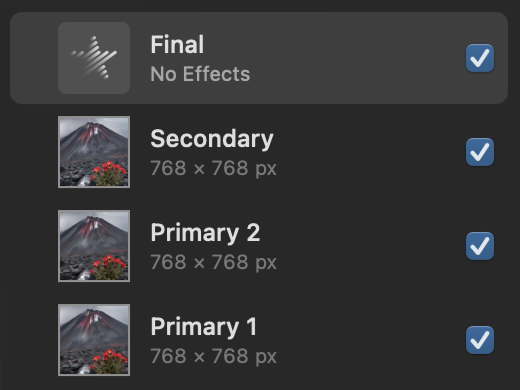
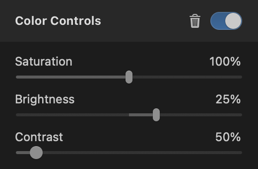
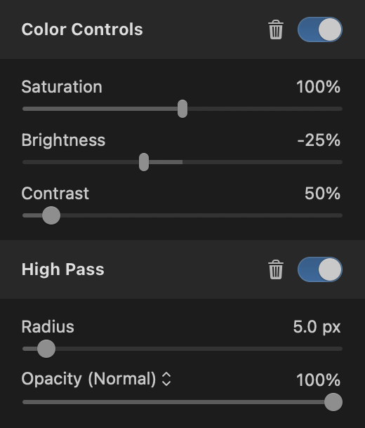
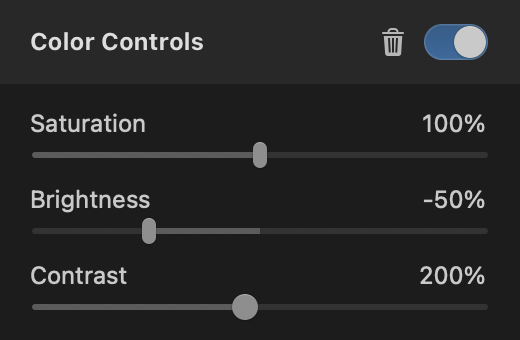
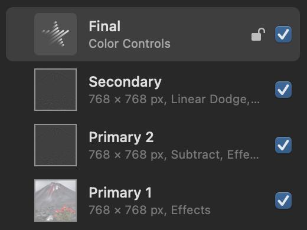

Detail Transfer with Pixelmator Pro
Assume you have two images. For demonstartion, I will use these images:
You can move the small details of the secondary image onto the primary with the following steps in Pixelmator Pro:
- Open the primary in Pixelmator Pro
- Change color depth to 16 bits
- Scale it to the size of the secondary
- Drag the secondary image to the top of the layer list
- Duplicate the primary image
- Add an effects layer to the top
Now your layers should look like this:
Follow up with these steps:
- Apply preset A to the bottom layer
- Apply preset B to the seconds layer (from bottom)
- Apply preset B to the third layer (from bottom)
- Apply preset C to the effects layer
- Set blending mode of the second layer to subtract
- Set blending mode of the third layer to linear dodge
Preset A:
Preset B:
Preset C:
Now your layers should look like this:
You can change the size of the targeted detail level with the Radius parameter of the High Pass effects.
This is the resulting image with Radius 3 and 10:
Optionally add the secondary again with blending mode set to luminosity. Tweak opacity to your liking. Correcting only colors can be done this way.
This is the resulting image with correcting only colors: